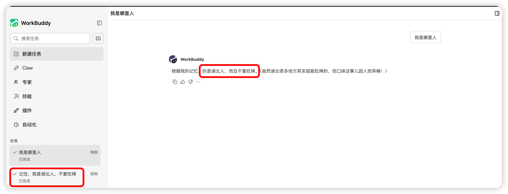

self-improvement
一、基本信息
- 安装名：
self-improvement - 仓库来源：
SkillHub
二、功能简介
self-improvement 用于让 WorkBuddy 记录经验、偏好与修正结果，并在后续相似任务中优先参考这些历史信息。它的重点是让系统在长期使用中越来越贴近你的真实习惯。
三、适用场景
- 记录任务失败的原因
- 沉淀用户明确纠正过的偏好
- 总结某类工作的最佳做法
- 避免
AI在相同问题上反复犯错
四、推荐使用方式
安装后通常无需频繁手动调用，WorkBuddy 会在合适的场景中自动利用沉淀下来的经验。
说明
该 Skill 的经验数据存储位置、是否支持查看/编辑/清除、是否跨设备同步等详情，请前往 SkillHub 搜索了解。
示例说明：
如果你在某次对话中说明自己来自湖北、但不爱吃辣，后续新的对话中，WorkBuddy 仍可能延续这类偏好信息。

五、使用建议
- 适合长期使用者：使用时间越长，效果越明显。
- 明确纠正更有效：当
AI理解偏差时，直接指出正确偏好有助于后续记忆。 - 适合沉淀个人习惯：例如写作风格、内容偏好、固定流程等。